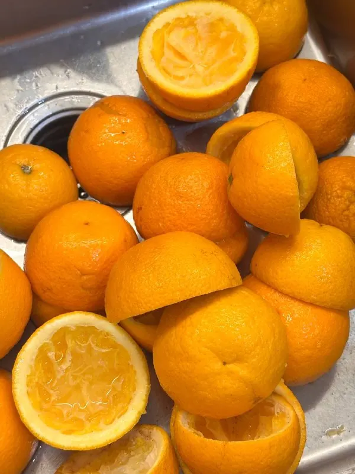
Бамбл
Апельсиновый фреш, карамель и эспрессо. Апельсины выжимаем каждое утро.
330 ₽В меню
Кофейня в Тамбове · с 8 утра
Маленькая светлая кофейня на Московской. Варим кофе на хорошей арабике, каждое утро печём круассаны и собираем сэндвичи — заходите позавтракать, поработать или просто почитать.
Почему к нам
Небольшой зал, большие окна и приветливые бариста. Без суеты сетевых кофеен.
Хорошая арабика — гости замечают это с первого глотка.
Свежие круассаны и сэндвичи для завтрака или обеда на бегу.
Берите любую и читайте, пока пьёте кофе.
Можно прийти с питомцем, поработать или забрать кофе с собой.
Попробуйте

Апельсиновый фреш, карамель и эспрессо. Апельсины выжимаем каждое утро.
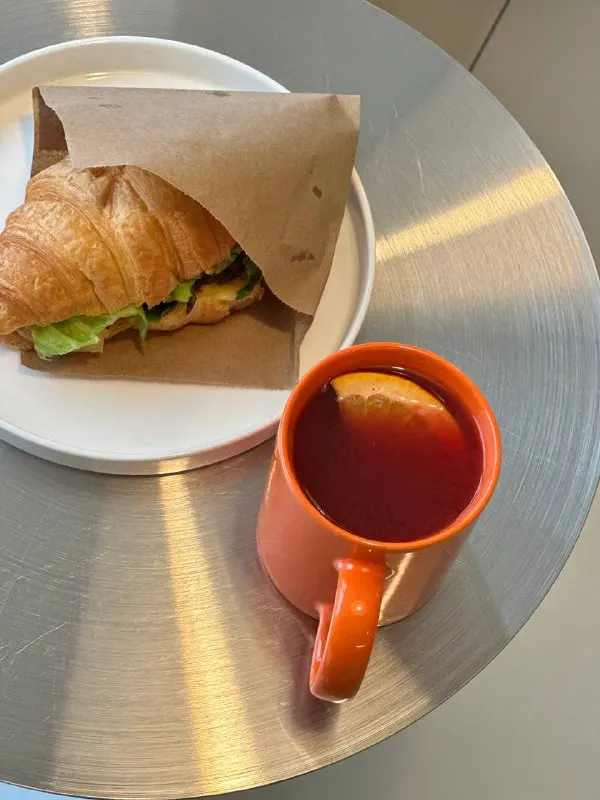
Сэндвич или сырники и кофе — тёплый завтрак по пути на работу.
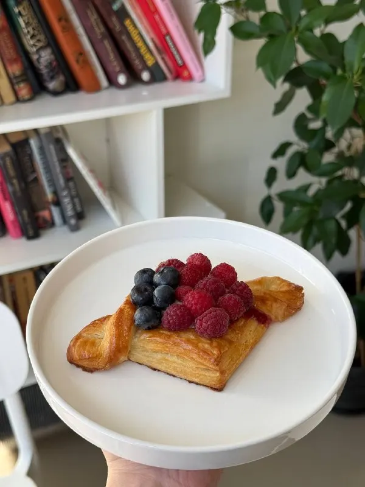
Даниш с ягодами, «Павлова», мороженое собственного производства.
Атмосфера
Из нашего Telegram
Новинки, витрина дня и сезонные напитки — кофейня делится ими в канале. Загляните, чтобы знать, за чем зайти утром.
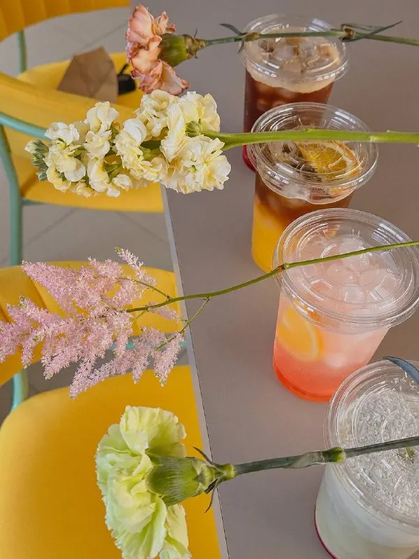
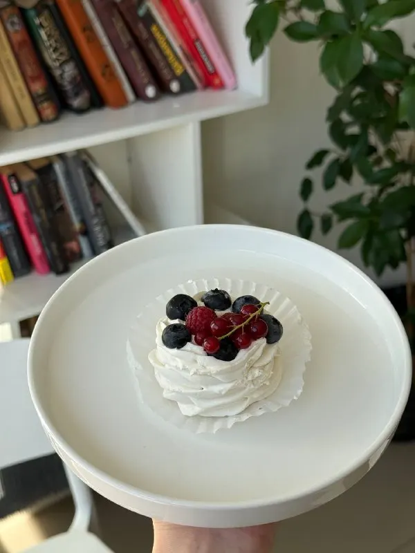
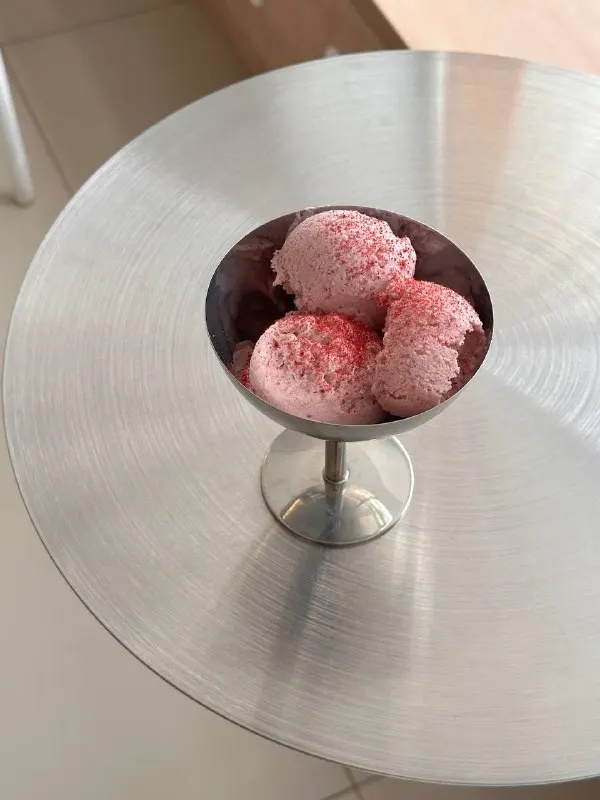
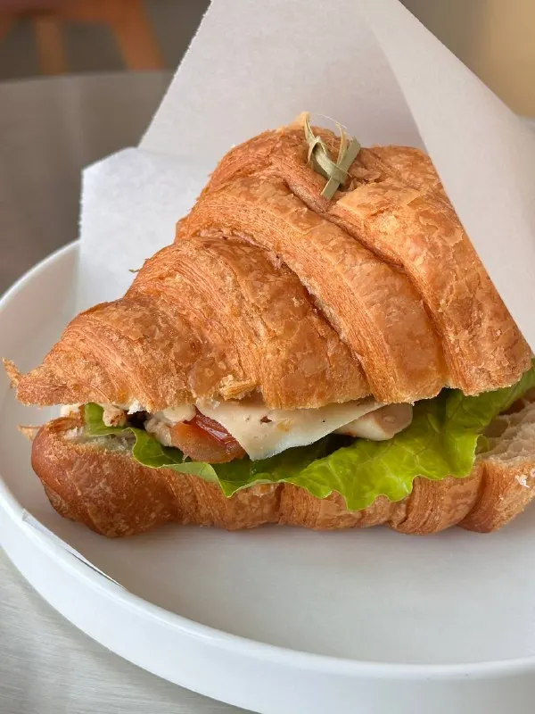
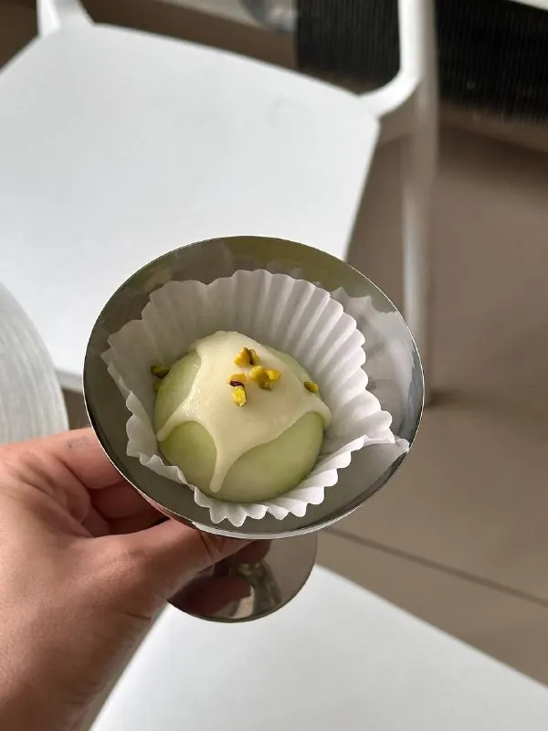
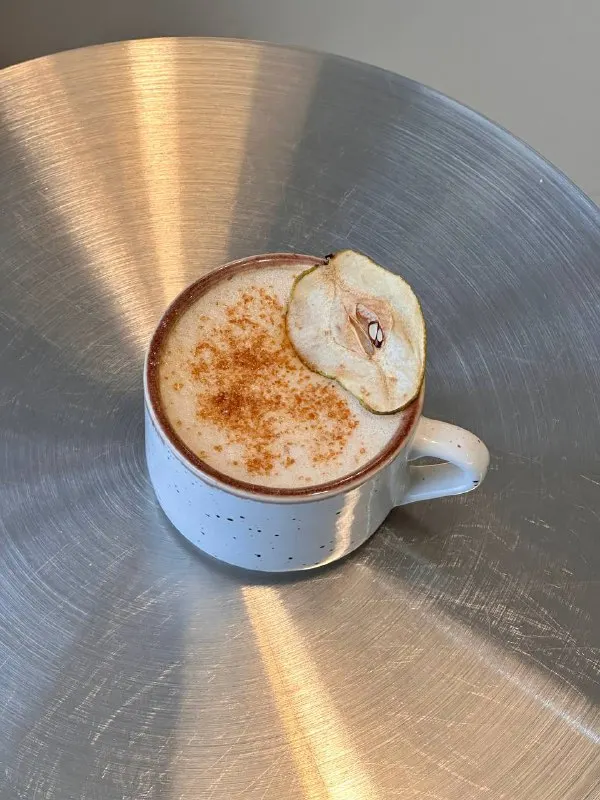
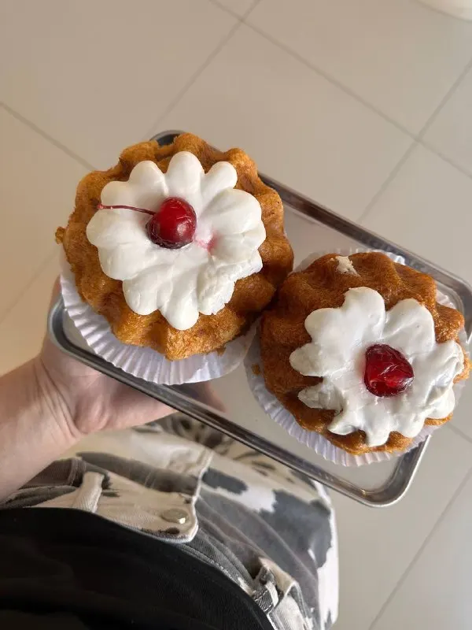
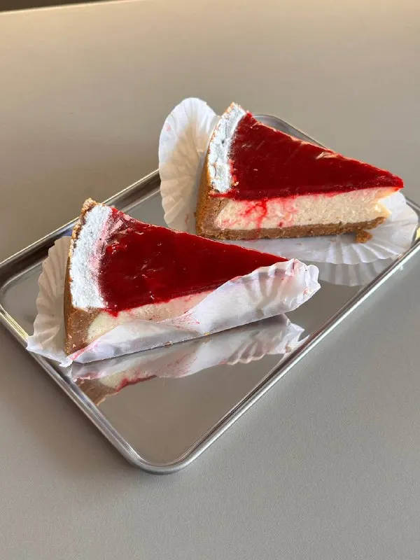
Отзывы гостей
«Лучший кофе в этом городе 12/10»
«Круассаны и сырный латте — это отдельный вид удовольствия»
«Есть даже книги, чтобы почитать, пока пьёшь кофе»
«Кофе из хорошей арабики, по вкусу это сразу становится понятно»
«Отличный кофе и сэндвичи… украшают моё утро»
Заходите